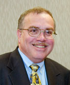
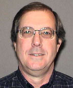
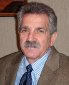
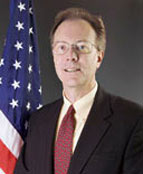

|
|
| |
|
| Moderator and Speaker Biographies |
|  |
Over the past 25 years, Howard K. Gruenspecht has worked extensively on electricity policy issues, including restructuring and reliability, regulations affecting motor fuels and vehicles, energy-related environmental issues, and economy-wide energy modeling. Before joining EIA, he was a Resident Scholar at Resources for the Future. From 1993 to 2000, Dr. Gruenspecht served as Director of Economic, Electricity and Natural Gas Analysis in the Department of Energy's (DOE) Office of Policy, having originally come to DOE in 1991 as Deputy Assistant Secretary for Economic and Environmental Policy. His accomplishments as a career senior executive at DOE have been recognized with three Presidential Rank Awards.
Prior to his service at DOE, Dr. Gruenspecht was Senior Staff Economist at the Council of Economic Advisers (1989-1991), with primary responsibilities in the areas of environment, energy, regulation, and international trade. His other professional experience includes service as a faculty member at the Graduate School of Industrial Administration, Carnegie Mellon University (1981-1988), Economic Adviser to the Chairman of the U.S. International Trade Commission (1988-1989), and Assistant Director, Economics and Business, on the White House Domestic Policy Staff (1978-1979).
Dr. Gruenspecht received his B.A. from McGill University in 1975 and his Ph.D. in Economics from Yale University in 1982. |
|
Shahid Chaudhry is a Program Manager at the California Energy Commission with more than two decades of experience working on a wide range of Water-Energy relationship. In this position, Mr. Chaudhry identifies, develops, implements, and administers technical assistance, grants, and loan funding for energy conservation / efficiency, renewable energy, and CHP projects with special reference to the water & wastewater sector. He is heavily involved in quantifying potential climate change impacts on the water & energy resources, and developing adaptation and mitigating strategies. Mr. Chaudhry has also taught at the university level; supervised R&D program & projects; and completed UNEP and WHO funded projects. As a volunteer, Mr. Chaudhry chairs the Energy Committee of the CA-NV-AWWA and has been assisting an International Non-Governmental Organization to identifying, developing, and implementing GHG emission reduction projects through water & energy integrated resource planning in many countries around the world.
Mr. Chaudhry is a board member of the Affordable Desalination Collaboration and a past-chair of Desalination Committee of the CA-NV Section of AWWA. He participated in the California Desalination Task Force as an energy specialist and was an external specialist on evaluating proposals and awarding $50 million by the California Department of Water Resources to promote desalination technology in California.
Mr. Chaudhry is a member of AEE, AMTA, AWWA, IDA, and WEF; and many RACs & PACs for Energy & Desalination projects for International Research Organizations.
He completed his education with degrees in Chemical Engineering, Environmental Sciences, and Environmental Engineering from Pakistan, U.K., and Canada, respectively. |
|  |
Overview of Emerging Issues and Challenges pdf 
M. Michael Hightower is a Distinguished Member of the Technical Staff in the Energy Security Center at Sandia National Laboratories in Albuquerque, New Mexico. He is a civil and environmental engineer and has over 30 years experience in research and development projects. Mr. Hightower’s current efforts include research and evaluation of innovative environmental and energy technologies and security and protection of critical water and energy infrastructures. One of his current activities is as project leader for development of a Science and Technology Roadmap for DOE for Energy-Water research and development. With scientists from Los Alamos, NETL, EPRI, and Sandia, Mr. Hightower also helped write a report to Congress on current and emerging energy and water interdependencies and challenges.
He serves on the Executive Committee of the New Mexico Pollution Prevention Technical Resource Center, the Board of Directors for Citizens for Responsible Energy, is past-Chair of the Waste management Education and Research Consortium Industrial Advisory Board, and Chair of ASME’s Environmental Engineering Division.
Mr. Hightower holds Bachelor’s and Master’s degrees in civil engineering from New Mexico State University. |
|  |
Water Resource Challenges From Energy Production pdf
James Richenderfer is Senior Scientist and Acting Chief of the Water Resources Management Division at the Susquehanna River Basin Commission (SRBC). The Water Resources Management Division is responsible for SRBC’s regulatory and compliance functions; engineering and technical services, including flood management, and drought coordination; and water supply planning and management.
Dr. Richenderfer’s duties at the SRBC include supervision of a professional team of engineers, geologists, hydrologists, environmental scientists, and biologists. Under his direction, the division’s activities are focused on long-term sustainable utilization of the basin’s shared water resources. Water management recommendations strike a balance between beneficial development and safeguarding adequate flows for public water supplies, industries, agriculture and recreation, and protecting aquatic life, habitat and water quality.
SRBC is the governing agency established under a 100-year compact signed on December 24, 1970, by the Federal government and the states of New York, Pennsylvania, and Maryland to protect and wisely manage the water resources of the Susquehanna River Basin. The Susquehanna River starts in Cooperstown, New York, and flows 444 miles to Havre de Grace, Maryland, where the river meets the Chesapeake Bay. |
|  |
Energy and Water: Implications for Energy Development pdf
Jeff C. Wright is the Director of the Office of Energy Projects at the Federal Regulatory Commission and has been a member of the Office of Energy Projects since its inception in 2000. This office is responsible for the licensing, safety, and administration of non-federal hydroelectric projects; the processing of applications for the construction and operation of natural gas pipelines and storage facilities; and the siting and safety of liquefied natural gas terminals. In addition, this Office administers the supplemental siting authority for interstate electric transmission facilities granted by the Energy Policy Act of 2005.
Mr. Wright joined the Commission in 1979 and served as project manager on many applications to site natural gas pipelines and storage facilities. Subsequently, he became the head of the Energy Infrastructure Policy Group. That group was responsible for analyzing and assessing energy infrastructure in the U.S. In this position, Mr. Wright organized and participated in FERC’s regional energy infrastructure conferences in the Northeast, Southeast, Midwest and West.
Mr. Wright received a B.A. in economics from the College of William and Mary and a M.B.A. from the University of Maryland. He was born in Alexandria, Virginia, and now lives in Silver Spring, Maryland, with his wife and two daughters. |
|
|
|
|